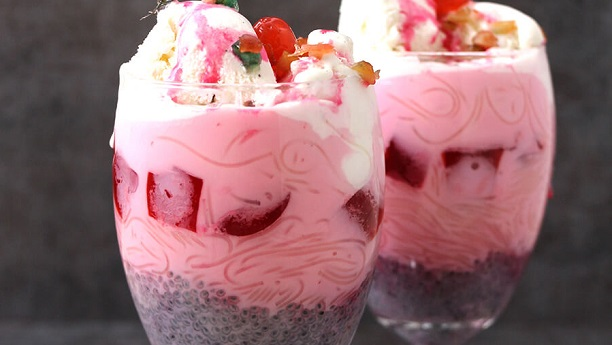

Kulfa Faloda

Description
faloda is a Mughalai cold dessert made with vermicelli. It has origins in the Persian dish faloodeh,
variants of which are found across West, Central, South and Southeast Asia.
Traditionally it is made by mixing rose syrup, vermicelli, and sweet basil seeds with milk, often served with ice cream.
Ingredients
- Ice Cream
- Milk
- vermicelli
- Basil
- Pistachio
- Sugar
- Sev
- Rose Water
Steps
-
Make the jello and let is set in fridge overnight and cut into square pieces
-
Cook vermicelli and cut it into smaller pieces as well, make sure to rinse the vermicelli with cold water and place
a little cold water with noodles
-
Soak Basil seeds in room temperature, the seeds will swell up so make sure to add ennough water for this to occur
- Mix 2 cups of evaporated milk with up to 1/4 cup of condensed milk
- Put some Vanilla Ice cream in a boul and top it with faloda and you are all done